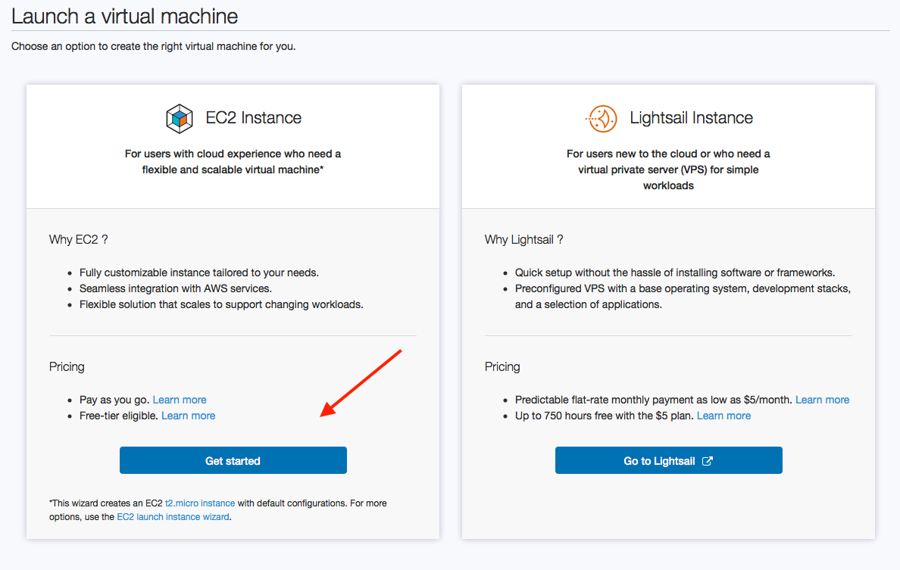
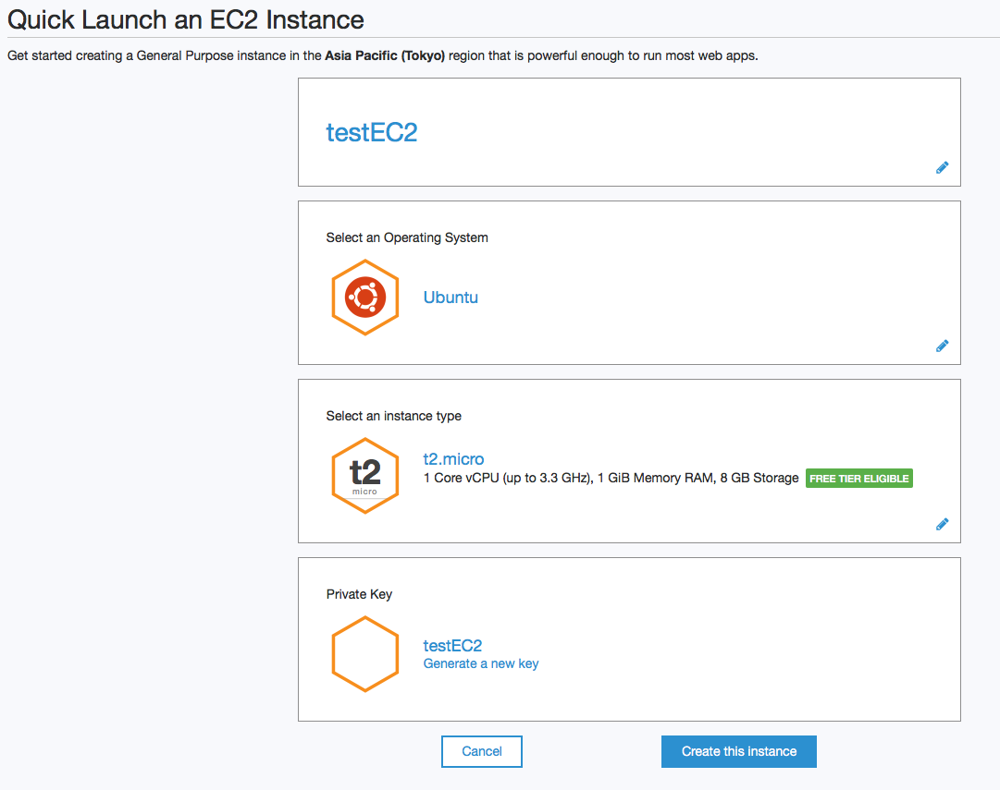
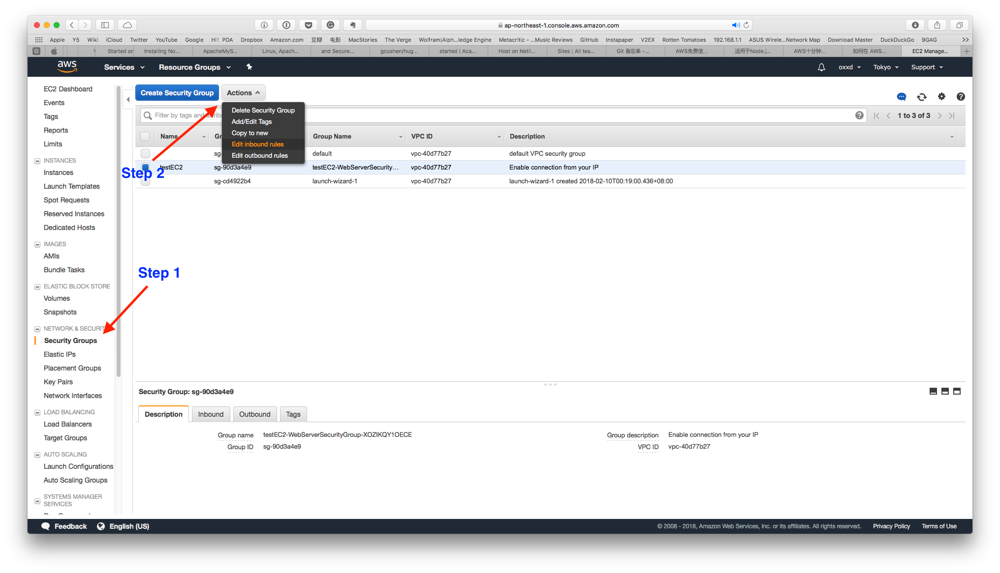
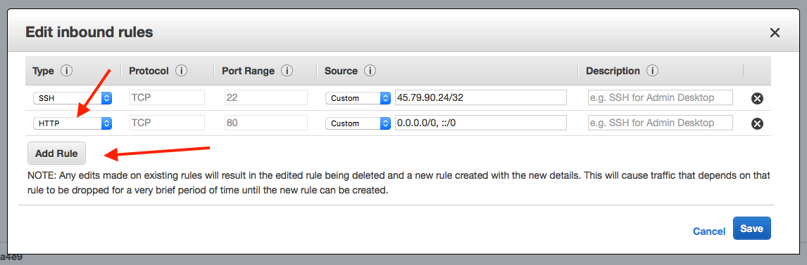

<!doctype html>
<!--[if lt IE 7]><html class="no-js lt-ie9 lt-ie8 lt-ie7" lang="en"> <![endif]-->
<!--[if (IE 7)&!(IEMobile)]><html class="no-js lt-ie9 lt-ie8" lang="en"><![endif]-->
<!--[if (IE 8)&!(IEMobile)]><html class="no-js lt-ie9" lang="en"><![endif]-->
<!--[if gt IE 8]><!--> <html class="no-js" lang="en"><!--<![endif]-->
<head>
<meta charset="utf-8">
<title>Latest Posts &#8211; OXXD's Blog</title>
<meta name="description" content="Describe this nonsense.">
<meta name="keywords" content="Jekyll, theme, themes, responsive, blog, modern">

<!-- Twitter Cards -->
<meta name="twitter:card" content="summary_large_image">
<meta name="twitter:image" content="http://localhost:4000/images/abstract-1.jpg">

<meta name="twitter:title" content="Latest Posts">
<meta name="twitter:description" content="Describe this nonsense.">
<meta name="twitter:creator" content="@OXXD">

<!-- Open Graph -->
<meta property="og:locale" content="en_US">
<meta property="og:type" content="article">
<meta property="og:title" content="Latest Posts">
<meta property="og:description" content="Describe this nonsense.">
<meta property="og:url" content="http://localhost:4000/">
<meta property="og:site_name" content="OXXD's Blog">


<link rel="canonical" href="http://localhost:4000/">
<link href="http://localhost:4000/feed.xml" type="application/atom+xml" rel="alternate" title="OXXD's Blog Feed">


<!-- http://t.co/dKP3o1e -->
<meta name="HandheldFriendly" content="True">
<meta name="MobileOptimized" content="320">
<meta name="viewport" content="width=device-width, initial-scale=1.0">

<!-- For all browsers -->
<link rel="stylesheet" href="http://localhost:4000/assets/css/main.min.css">
<!-- Webfonts -->
<link href="http://fonts.googleapis.com/css?family=Lato:300,400,700,300italic,400italic" rel="stylesheet" type="text/css">

<meta http-equiv="cleartype" content="on">

<!-- Load Modernizr -->
<script src="http://localhost:4000/assets/js/vendor/modernizr-2.6.2.custom.min.js"></script>

<!-- Icons -->
<!-- 16x16 -->
<link rel="shortcut icon" href="http://localhost:4000/favicon.ico">
<!-- 32x32 -->
<link rel="shortcut icon" href="http://localhost:4000/favicon.png">
<!-- 57x57 (precomposed) for iPhone 3GS, pre-2011 iPod Touch and older Android devices -->
<link rel="apple-touch-icon-precomposed" href="http://localhost:4000/images/apple-touch-icon-precomposed.png">
<!-- 72x72 (precomposed) for 1st generation iPad, iPad 2 and iPad mini -->
<link rel="apple-touch-icon-precomposed" sizes="72x72" href="http://localhost:4000/images/apple-touch-icon-72x72-precomposed.png">
<!-- 114x114 (precomposed) for iPhone 4, 4S, 5 and post-2011 iPod Touch -->
<link rel="apple-touch-icon-precomposed" sizes="114x114" href="http://localhost:4000/images/apple-touch-icon-114x114-precomposed.png">
<!-- 144x144 (precomposed) for iPad 3rd and 4th generation -->
<link rel="apple-touch-icon-precomposed" sizes="144x144" href="http://localhost:4000/images/apple-touch-icon-144x144-precomposed.png">


</head>

<body id="post-index" class="feature">

<!--[if lt IE 9]><div class="upgrade"><strong><a href="http://whatbrowser.org/">Your browser is quite old!</strong> Why not upgrade to a different browser to better enjoy this site?</a></div><![endif]-->
<nav id="dl-menu" class="dl-menuwrapper" role="navigation">
	<button class="dl-trigger">Open Menu</button>
	<ul class="dl-menu">
		<li><a href="http://localhost:4000">Home</a></li>
		<li>
			<a href="#">About</a>
			<ul class="dl-submenu">
				<li>
					
					<h4>oxxd</h4>
					<p>Frontend Web Developer</p>
				</li>
				<li><a href="http://localhost:4000/about/">Learn More</a></li>
				<li>
					<a href="mailto:oxxxxd@gmail.com"><i class="fa fa-envelope"></i> Email</a>
				</li>
				<li>
					<a href="http://twitter.com/OXXD"><i class="fa fa-twitter"></i> Twitter</a>
				</li>
				
				
				
				<li>
					<a href="http://github.com/OXXD"><i class="fa fa-github"></i> GitHub</a>
				</li>
				
				<li>
					<a href="http://instagram.com/oxxd"><i class="fa fa-instagram"></i> Instagram</a>
				</li>
				
				
			</ul><!-- /.dl-submenu -->
		</li>
		<li>
			<a href="#">Posts</a>
			<ul class="dl-submenu">
				<li><a href="http://localhost:4000/posts/">All Posts</a></li>
				<li><a href="http://localhost:4000/tags/">All Tags</a></li>
			</ul>
		</li>
		<li><a href="http://localhost:4000/about">About Me</a></li><li><a href="http://oxxd.me" target="_blank">oxxd.me</a></li><li><a href="http://fakesteam.oxxd.me" target="_blank">fakesteam</a></li>
	</ul><!-- /.dl-menu -->
</nav><!-- /.dl-menuwrapper -->


<div class="entry-header">
  <div class="image-credit">Image source: <a href="http://www.dargadgetz.com/ios-7-abstract-wallpaper-pack-for-iphone-5-and-ipod-touch-retina/">dargadgetz</a></div><!-- /.image-credit -->
  
    <div class="entry-image">
      
    </div><!-- /.entry-image -->
  
  <div class="header-title">
    <div class="header-title-wrap">
      <h1>OXXD's Blog</h1>
      <h2>Latest Posts</h2>
    </div><!-- /.header-title-wrap -->
  </div><!-- /.header-title -->
</div><!-- /.entry-header -->

<div id="main" role="main">
  
<article class="hentry">
  <header>
    <div class="entry-meta">
      <span class="entry-date date published updated"><time datetime="2018-02-11T00:00:00-05:00"><a href="http://localhost:4000/nodejs-aws/">February 11, 2018</a></time></span><span class="author vcard"><span class="fn"><a href="http://localhost:4000/about/" title="About oxxd">oxxd</a></span></span>&nbsp; &bull; &nbsp;<span class="entry-comments"><a href="http://localhost:4000/nodejs-aws/#disqus_thread">Comment</a></span>
      
    </div><!-- /.entry-meta -->
    
      <h1 class="entry-title"><a href="http://localhost:4000/nodejs-aws/" rel="bookmark" title="使用 AWS 部署 Node.js 项目" itemprop="url">使用 AWS 部署 Node.js 项目</a></h1>
    
  </header>
  <div class="entry-content">
    <h3 id="前提">前提</h3>
<p>这是一篇最近尝试使用 AWS 的 12 个月免费额度以内的 EC2 部署 Node.js 项目的实践。第一次接触服务器和线上环境部署，遇到了不少问题，很多地方都是一通 Google 之后胡乱操作出结果的。方法估计也不是最好用的，写文章主要是给自己一个总结和分享，建议可以看文末那几篇写得比我清楚很多的文章。部署 Node.js 项目还有很多其他更好的方案，比如 Digital Ocean 的 $5 一月的 VPS，新浪云的更简单的部署也可以参考之前写的<a href="http://oxxd.github.io/nodejs-sinacloud">文章</a>。还有 Heroku 好像也是一个不错的解决方案，以后尝试之后再总结吧。<br />
AWS 的 <a href="https://aws.amazon.com/cn/free/">12 月免费套餐</a>提供相当多的服务，包括最主要用到的 EC2(服务器), RDS(关系型数据库), 是一个用来搭建小型网站的很好的解决方案。详细可以参考<a href="https://aws.amazon.com/cn/free/faqs/?ft=nf&amp;refid=ha_a131L000005CqVRQA0">这里</a><br />
本来我以为 <a href="https://aws.amazon.com/cn/getting-started/tutorials/launch-an-app/">Elastic Beanstalk</a> 也是包含在免费套餐里的，但是写这篇文章的时候发现并不是 XD。不然使用 Elastic Beanstalk 一键部署项目应该是更简单的选择。我也尝试过使用 Elastic Beanstalk 部署，但是代码上传完毕之后报错找不到 package.json 就不了了之了。<br />
另外说一下 AWS 的收费机制是账单制度，也就是每个月底会根据你的使用量来进行收费，所以要注意自己的服务用量，以避免额外收费。</p>

<h3 id="申请-aws-账号">申请 AWS 账号</h3>
<p>首先申请 AWS 账号需要提供信用卡，不确定是否需要双币信用卡。信用卡是为了验证用户信息以及后续产生的费用收费的。确认没问题之后可以在这里跟着向导进行<a href="https://aws.amazon.com/cn/free/">注册</a>，期间会收到英文电话提示输入验证码，信用卡验证会扣一笔 1 美元的扣款，理论上是为了验证卡片，后续会退回。<br />
然后注意一下自己的注册区域，AWS 中国应该是最近两年才登陆国内的。我的账号似乎因为之前在美区注册过，注册了之后不能选择在国内区域建立主机。</p>

<h3 id="创建-ec2-实例">创建 EC2 实例</h3>
<figure class="half">
    <a href="../images/nodejs-aws-tk.png">
        
    </a>
    <a href="../images/nodejs-aws-ec2.png">
        
    </a>
	<figcaption><span>创建 EC2 实例</span>.</figcaption>
</figure>
<p>登入控制台，准备创建 EC2 实例之前先确认一下所在区域。我这里选择的是 Tokyo 的，因为之前在美国的一个主机 SSH 登录不上去，不确定是什么原因。如果是国内账号应该能选择北京或者宁夏区域。</p>

<figure class="third">
	<a href="../images/nodejs-aws01.png"></a>
	<a href="../images/nodejs-aws02.png"></a>
	<a href="../images/nodejs-aws03.png"></a>
	<a href="../images/nodejs-aws04.png"></a>
	<a href="../images/nodejs-aws05.png"></a>
	<a href="../images/nodejs-aws06.png"></a>
	<figcaption>创建 EC2 实例步骤</figcaption>
</figure>
<p>创建 EC2 实例步骤  跟着向导一步步向下就可以了，这里我选择的服务器是 Ubuntu 的，Ubuntu 系统默认用户名是 ubuntu 一会儿会用到。</p>

<h3 id="为-ec2-配置入站端口">为 EC2 配置入站端口</h3>
<p>创建好之后首先要配置一下入站规则，让服务器允许 HTTP 端口。步骤以下。</p>
<figure class="half">
    <a href="../images/nodejs-aws10.png">
        
    </a>
    <a href="../images/nodejs-aws11.png">
        
    </a>
	<figcaption><span>配置入站端口</span>.</figcaption>
</figure>
<ol>
  <li>前往 EC2 控制台。选择 Secruity Groups，选中刚刚创建的实例所用的规则，点击 Action，点击 Edit inbound rules(编辑入站规则)。</li>
  <li>点击 Add Rule，在类型下拉框中选择 HTTP，默认会在端口处为你填上 80 端口。</li>
  <li>添加自定义端口也是一样的步骤。类型中选择 Custom 就可以了。</li>
</ol>

<h3 id="连接-ec2-实例">连接 EC2 实例</h3>
<p>接下来是连接 EC2 实例。这一步是比较重要的，毕竟连接上了才能做后续操作。打开终端开始输入命令吧。</p>
<figure>
    <a href="../images/nodejs-aws08.png">
        
    </a>
	<figcaption><span>连接 EC2 实例</span>.</figcaption>
</figure>
<div class="language-bash highlighter-rouge"><div class="highlight"><pre class="highlight"><code><span class="c"># 首先使用 chmod 命令来确保您的私有密钥文件不是公开可见的，</span>
chmod 400 testEC2.pem 
<span class="c"># 连接。注意 @ 后面换成自己的实例 DNS 地址或者 IP 地址</span>
ssh <span class="nt">-i</span> <span class="s2">"testEC2.pem"</span> ubuntu@ec2-198-51-100-1.compute-1.amazonaws.com
</code></pre></div></div>

<h3 id="安装-nodejs">安装 Node.js</h3>
<p>连接上之后就可以开始安装 Node.js 等我们需要的服务啦。这些全都是在命令行内操作的，安装方法也还有其他很多。<a href="https://nodejs.org/en/download/package-manager/#debian-and-ubuntu-based-linux-distributions">参考</a></p>

<div class="language-bash highlighter-rouge"><div class="highlight"><pre class="highlight"><code>curl <span class="nt">-sL</span> https://deb.nodesource.com/setup_8.x | <span class="nb">sudo</span> <span class="nt">-E</span> bash -
<span class="nb">sudo </span>apt-get install <span class="nt">-y</span> nodejs
</code></pre></div></div>

<p>检查是否安装成功</p>
<div class="language-bash highlighter-rouge"><div class="highlight"><pre class="highlight"><code>node <span class="nt">-v</span>
</code></pre></div></div>

<h3 id="安装-apache--php--mysql">安装 Apache + PHP + MySQL</h3>
<p>虽然我们不需要用到 Apache，但是我们需要在本地安装 MySQL。数据库服务也可以选择 AWS 提供的 RDS 更加方便。但是我创建的 RDS 实例连不上，所以就直接在服务器上搭数据库了。
这里直接安装 LAMP, <a href="https://help.ubuntu.com/community/ApacheMySQLPHP">参考</a>。</p>
<div class="language-bash highlighter-rouge"><div class="highlight"><pre class="highlight"><code><span class="c"># 检查更新</span>
<span class="nb">sudo </span>apt-get update
<span class="c"># 安装 LAMP</span>
<span class="nb">sudo </span>apt-get install lamp-server^
</code></pre></div></div>

<p>也可以分开安装，具体就不详述了。如果需要 phpmyadmin, <a href="https://www.digitalocean.com/community/tutorials/how-to-install-and-secure-phpmyadmin-on-ubuntu-12-04">参考</a></p>
<div class="language-bash highlighter-rouge"><div class="highlight"><pre class="highlight"><code><span class="c"># 安装 phpmyadmin</span>
<span class="nb">sudo </span>apt-get install phpmyadmin apache2-utils
</code></pre></div></div>

<p>连接数据库验证一下安装是否成功</p>
<div class="language-bash highlighter-rouge"><div class="highlight"><pre class="highlight"><code>mysql <span class="nt">-u</span> root <span class="nt">-p</span>
</code></pre></div></div>
<p>验证 Apach 是否安装成功直接打开 EC2 DNS地址就可以了，看到页面就说明 Apache 启动成功。如果没有看到页面，可以尝试重启 EC2 实例。</p>

<p>这里因为不需要 Apach 并且想偷懒直接把 Node 运行在 80 端口，所以把 Apache 禁用了</p>
<div class="language-bash highlighter-rouge"><div class="highlight"><pre class="highlight"><code> <span class="nb">sudo </span>systemctl stop apache2.service.
</code></pre></div></div>

<h3 id="部署">部署</h3>
<p>我这里部署是直接从 Github 上把自己项目 clone 下来的，这是最方便的方式了。</p>
<div class="language-bash highlighter-rouge"><div class="highlight"><pre class="highlight"><code>git clone https://github.com/yourapp.git
<span class="nb">cd </span>yourapp

<span class="c"># 执行 screen 保持 node 一直在跑。 SSH 连接过几分钟没有操作是会自动断开的</span>
screen
<span class="c"># 因为 app.js 中设置了端口号为 80 所以需要 sudo 权限启动应用，否则不需要</span>
<span class="nb">sudo </span>node app.js
</code></pre></div></div>
<p>打开 EC2 DNS地址访问是否能够看到页面。至此部署成功啦，Hooray!</p>

<h3 id="绑定-elastic-ip-以及自定义域名">绑定 Elastic IP 以及自定义域名</h3>
<p>如果不想用系统分配的一长串的 DNS 地址或者 IP 地址来访问网站的话就需要自定义域名啦。下面说一下如何给 EC2 分配静态 IP 并且绑定自定义域名。</p>
<figure class="half">
    <a href="../images/nodejs-aws13.png">
        
    </a>
    <a href="../images/nodejs-aws16.png">
        
    </a>
	<figcaption><span>给 EC2 实例分配静态 IP</span>.</figcaption>
</figure>
<p>为了要给 EC2 实例绑定自定义域名首先要使用 Elastic IP 给他分配静态 IP 地址。注意 AWS 规定创建了一个静态 IP 地址如果没有绑定实例是会按小时收费的。<br />
点击 Elastic IP，点击 Allocate new address, 在弹出的窗口中将 EC2 实例(Instance)分配给这个地址。</p>
<figure>
    <a href="../images/nodejs-aws17.png">
        
    </a>
	<figcaption><span>回到 EC2 控制台可以看到实例地址也做了改变。</span>.</figcaption>
</figure>

<h4 id="到自己的域名注册商中解析域名">到自己的域名注册商中解析域名</h4>
<p>这里我使用的是 namecheap，其他域名提供商解析域名方式也大同小异。</p>
<figure>
    <a href="../images/nodejs-aws-namecheap.png">
        
    </a>
	<figcaption><span>添加一条 A 纪录，使用二级域名的话 Host 里填二级域名，使用主域名则添空，后面 Value 填前面 Elastic IP 分配的静态 IP 就可以了。</span>.</figcaption>
</figure>

<!-- ### 填坑 -->

<h3 id="参考文档">参考文档</h3>
<ul>
  <li><a href="http://ned11.iteye.com/blog/1775898">在Amazon EC2 上部署node.js应用</a></li>
  <li><a href="http://dez.logdown.com/posts/2017/04/07/aws-ec2-deploy-nodejs-web-app">筆記｜在AWS EC2部署Node.js web教學</a></li>
  <li><a href="http://www.yours1989.com/52/">小白如何利用wordpress和aws从零搭建自己的个人网站</a></li>
  <li><a href="http://www.cnblogs.com/deltacat/p/amazon-aws-web-1.html">在 Amazon AWS 搭建及部署网站：（一）申请、设置 AWS 服务</a></li>
  <li><a href="https://nodejs.org/en/download/package-manager/#debian-and-ubuntu-based-linux-distributions">Installing Node.js via package manager</a></li>
  <li><a href="https://help.ubuntu.com/community/ApacheMySQLPHP">To install the default LAMP stack in Ubuntu 10.04 and above</a></li>
  <li><a href="https://www.digitalocean.com/community/tutorials/how-to-install-linux-apache-mysql-php-lamp-stack-on-ubuntu-16-04">How To Install Linux, Apache, MySQL, PHP (LAMP) stack on Ubuntu 16.04</a></li>
  <li><a href="https://www.digitalocean.com/community/tutorials/how-to-install-and-secure-phpmyadmin-on-ubuntu-12-04">How To Install and Secure phpMyAdmin on Ubuntu 12.04</a></li>
  <li><a href="https://aws.amazon.com/cn/free/">AWS 免费套餐</a></li>
  <li><a href="https://aws.amazon.com/cn/getting-started/tutorials/">AWS 10 分钟教程</a></li>
  <li><a href="https://aws.amazon.com/cn/getting-started/tutorials/launch-a-virtual-machine/">通过 Amazon EC2启动 Linux 虚拟机</a></li>
  <li><a href="https://aws.amazon.com/cn/getting-started/tutorials/launch-an-app/">通过 AWS Elastic Beanstalk启动应用程序</a></li>
</ul>

  </div><!-- /.entry-content -->
</article><!-- /.hentry -->

<article class="hentry">
  <header>
    <div class="entry-meta">
      <span class="entry-date date published updated"><time datetime="2018-02-10T00:00:00-05:00"><a href="http://localhost:4000/npm-start/">February 10, 2018</a></time></span><span class="author vcard"><span class="fn"><a href="http://localhost:4000/about/" title="About oxxd">oxxd</a></span></span>&nbsp; &bull; &nbsp;<span class="entry-comments"><a href="http://localhost:4000/npm-start/#disqus_thread">Comment</a></span>
      
    </div><!-- /.entry-meta -->
    
      <h1 class="entry-title"><a href="http://localhost:4000/npm-start/" rel="bookmark" title="NPM 启动！" itemprop="url">NPM 启动！</a></h1>
    
  </header>
  <div class="entry-content">
    <p>时隔多年，又重新(正式)开始学习和成为一名码农了。这个 Blog 自从架好之后过去这么多年也从来没有写过任何东西，那么以后就边纪录边学习吧!</p>

<div class="language-bash highlighter-rouge"><div class="highlight"><pre class="highlight"><code>npm start
</code></pre></div></div>

  </div><!-- /.entry-content -->
</article><!-- /.hentry -->

<article class="hentry">
  <header>
    <div class="entry-meta">
      <span class="entry-date date published updated"><time datetime="2018-02-10T00:00:00-05:00"><a href="http://localhost:4000/nodejs-sinacloud/">February 10, 2018</a></time></span><span class="author vcard"><span class="fn"><a href="http://localhost:4000/about/" title="About oxxd">oxxd</a></span></span>&nbsp; &bull; &nbsp;<span class="entry-comments"><a href="http://localhost:4000/nodejs-sinacloud/#disqus_thread">Comment</a></span>
      
    </div><!-- /.entry-meta -->
    
      <h1 class="entry-title"><a href="http://localhost:4000/nodejs-sinacloud/" rel="bookmark" title="使用新浪云部署 Node.js 项目" itemprop="url">使用新浪云部署 Node.js 项目</a></h1>
    
  </header>
  <div class="entry-content">
    <p>这是一个使用新浪云部署 Node.js 项目的实践，主要目的是为了总结一些自己部署的经验和遇到的坑，希望有参考价值。</p>

<h3 id="前提">前提</h3>
<p>为了达到部署成功的目的，可能需要一些 Git, Node.js 经验，另外新浪云也提供了比较丰富的<a href="http://www.sinacloud.com/index/support.html">文档</a>。</p>

<h3 id="准备">准备</h3>
<p>先确定一下自己的项目设置，最好是把默认端口设置成 5050，以及修改 MySQL 链接设置。下面是 app.js 的设置，注意最后一行。</p>

<div class="language-javascript highlighter-rouge"><div class="highlight"><pre class="highlight"><code><span class="kd">var</span> <span class="nx">express</span> <span class="o">=</span> <span class="nx">require</span><span class="p">(</span><span class="s1">'express'</span><span class="p">)</span>
<span class="kd">var</span> <span class="nx">app</span> <span class="o">=</span> <span class="nx">express</span><span class="p">()</span>

<span class="nx">app</span><span class="p">.</span><span class="nx">listen</span><span class="p">(</span><span class="nx">process</span><span class="p">.</span><span class="nx">env</span><span class="p">.</span><span class="nx">PORT</span> <span class="o">||</span> <span class="mi">5050</span><span class="p">)</span>
</code></pre></div></div>

<p>下面是数据库连接 pool.js 的设置。</p>
<div class="language-javascript highlighter-rouge"><div class="highlight"><pre class="highlight"><code><span class="kd">var</span> <span class="nx">mysql</span> <span class="o">=</span> <span class="nx">require</span><span class="p">(</span><span class="s1">'mysql'</span><span class="p">);</span>

<span class="c1">// 连接共享型MySQL</span>
<span class="kd">var</span> <span class="nx">connection</span> <span class="o">=</span> <span class="nx">mysql</span><span class="p">.</span><span class="nx">createConnection</span><span class="p">({</span>
    <span class="na">host</span>     <span class="p">:</span> <span class="nx">process</span><span class="p">.</span><span class="nx">env</span><span class="p">.</span><span class="nx">MYSQL_HOST</span><span class="p">,</span>
    <span class="na">port</span>     <span class="p">:</span> <span class="nx">process</span><span class="p">.</span><span class="nx">env</span><span class="p">.</span><span class="nx">MYSQL_PORT</span><span class="p">,</span>
    <span class="na">user</span>     <span class="p">:</span> <span class="nx">process</span><span class="p">.</span><span class="nx">env</span><span class="p">.</span><span class="nx">ACCESSKEY</span><span class="p">,</span>
    <span class="na">password</span> <span class="p">:</span> <span class="nx">process</span><span class="p">.</span><span class="nx">env</span><span class="p">.</span><span class="nx">SECRETKEY</span><span class="p">,</span>
    <span class="na">database</span> <span class="p">:</span> <span class="s1">'app_'</span> <span class="o">+</span> <span class="nx">process</span><span class="p">.</span><span class="nx">env</span><span class="p">.</span><span class="nx">APPNAME</span>
<span class="p">});</span>
</code></pre></div></div>

<h3 id="创建应用">创建应用</h3>
<p>这一步大部分步骤都比较简单，会采用官方提供的文档描述。</p>

<figure class="half">
    <a href="../images/nodejs-sinacloud _2018-02-11_15-55-33.png">
        
    </a>
    <a href="../images/nodejs-sinacloud_2018-02-11_15-55-49.png">
        
    </a>
	<figcaption><span>登录『新浪云控制台』，点击云应用，点击『创建新应用』</span>.</figcaption>
</figure>

<figure>
    <a href="../images/nodejs-sinacloud_2018-02-11_15-58-54.png">
        
    </a>
	<figcaption><span>选择 NodeJS 填写二级域名和应用名称。实例个数推荐设置为 1。注意 Node.js 项目是按小时收费的。</span>.</figcaption>
</figure>

<figure>
    <a href="../images/nodejs-sinacloud_2018-02-11_16-01-20.png">
        
    </a>
	<figcaption><span>代码管理</span>.</figcaption>
</figure>

<ul>
  <li>创建应用完成之后点击代码管理，这里使用 Git 进行正式的项目部署。</li>
</ul>

<h3 id="项目部署">项目部署</h3>
<p>首先进入到自己的 Git 项目然后确保本地运行没有问题后，创建一个仓库 sinacloud。注意请将下面的所有的 yourapp 替换成你自己的应用名称。</p>

<div class="language-bash highlighter-rouge"><div class="highlight"><pre class="highlight"><code><span class="nv">$ </span>git remote add sinacloud https://git.sinacloud.com/yourapp
<span class="nv">$ </span>git push sinacloud master
</code></pre></div></div>

<p>这里说一下没使用过 Git 的同学如何初始化一个 Git 项目和 commit 操作。具体的可以参考<a href="https://git-scm.com/book/zh/v2">文档</a>和 Github <a href="https://help.github.com/">帮助</a>。</p>
<div class="language-bash highlighter-rouge"><div class="highlight"><pre class="highlight"><code><span class="c"># 初始化 git 项目</span>
git init

<span class="c"># 如果第一次使用 git 会提示你配置全局用户名和邮箱</span>
git config <span class="nt">--global</span> user.email <span class="s2">"you@example.com"</span>
git config <span class="nt">--global</span> user.name <span class="s2">"Your Name"</span>

<span class="c"># git commit 操作用于每次修改文件之后提交</span>
git add <span class="nb">.</span>
git commit <span class="nt">-m</span> <span class="s1">'这里填写修改的注释'</span>

<span class="c"># git remote -v 确认远程仓库地址</span>
git remote <span class="nt">-v</span>
<span class="c"># git push 用来与远程同步</span>
git push
</code></pre></div></div>

<p>部署的时候，Git 会显示当前的进度，如果部署失败，会提示相应的错误信息（比如 package.json 格式问题等）。</p>

<p>部署完成后，就可以通过 http://yourapp.applinzi.com 来访问应用了。</p>

<p>参考<a href="http://www.sinacloud.com/doc/sae/docker/nodejs-getting-started.html">文档</a></p>

<h3 id="后期维护">后期维护</h3>

<p>后期维护可以采用两种方式</p>

<p>1.直接本地修改后部署到 sinacloud 仓库</p>

<div class="language-bash highlighter-rouge"><div class="highlight"><pre class="highlight"><code><span class="nv">$ </span>git add <span class="nb">.</span>
<span class="nv">$ </span>git commit <span class="nt">-m</span> <span class="s1">'update'</span>
<span class="nv">$ </span>git push sinacloud master
</code></pre></div></div>

<p>2.或者在你应用代码目录里，克隆 Git 远程仓库</p>

<div class="language-bash highlighter-rouge"><div class="highlight"><pre class="highlight"><code><span class="nv">$ </span>git clone https://git.sinacloud.com/yourapp
</code></pre></div></div>

<p>输入安全邮箱和密码。</p>

<div class="language-bash highlighter-rouge"><div class="highlight"><pre class="highlight"><code><span class="nv">$ </span><span class="nb">cd </span>yourapp
</code></pre></div></div>

<p>编辑代码并部署代码</p>

<div class="language-bash highlighter-rouge"><div class="highlight"><pre class="highlight"><code><span class="nv">$ </span>git add <span class="nb">.</span>
<span class="nv">$ </span>git commit <span class="nt">-m</span> <span class="s1">'Init my first app'</span>
<span class="nv">$ </span>git push 
</code></pre></div></div>

<p>上面的代码是可以在应用管理-应用-代码管理里看得到的。</p>

<h3 id="数据库">数据库</h3>
<p><strong>为应用添加数据库。</strong></p>

<p>进入应用管理-数据库与缓存服务-共享型 MySQL， 创建 MySQL，跟着步骤一步一步创建。 创建完成之后选择管理，会跳转到类似 phpmyadmin 的网页版数据库管理工具，可以倒入数据文件或者执行 SQL 语句。</p>

<figure>
    <a href="../images/nodejs-sinacloud_2018-02-11_16-02-03.png">
        
    </a>
	<figcaption><span>创建数据库</span>.</figcaption>
</figure>

<p><strong>数据库链接</strong></p>

<p>下面是Node.js 链接 MySQL 的设置，注意数据库名的设置。</p>

<div class="language-javascript highlighter-rouge"><div class="highlight"><pre class="highlight"><code><span class="kd">var</span> <span class="nx">mysql</span>      <span class="o">=</span> <span class="nx">require</span><span class="p">(</span><span class="s1">'mysql'</span><span class="p">);</span>

<span class="c1">// 连接共享型MySQL</span>
<span class="kd">var</span> <span class="nx">connection</span> <span class="o">=</span> <span class="nx">mysql</span><span class="p">.</span><span class="nx">createConnection</span><span class="p">({</span>
    <span class="na">host</span>     <span class="p">:</span> <span class="nx">process</span><span class="p">.</span><span class="nx">env</span><span class="p">.</span><span class="nx">MYSQL_HOST</span><span class="p">,</span>
    <span class="na">port</span>     <span class="p">:</span> <span class="nx">process</span><span class="p">.</span><span class="nx">env</span><span class="p">.</span><span class="nx">MYSQL_PORT</span><span class="p">,</span>
    <span class="na">user</span>     <span class="p">:</span> <span class="nx">process</span><span class="p">.</span><span class="nx">env</span><span class="p">.</span><span class="nx">ACCESSKEY</span><span class="p">,</span>
    <span class="na">password</span> <span class="p">:</span> <span class="nx">process</span><span class="p">.</span><span class="nx">env</span><span class="p">.</span><span class="nx">SECRETKEY</span><span class="p">,</span>
    <span class="na">database</span> <span class="p">:</span> <span class="s1">'app_'</span> <span class="o">+</span> <span class="nx">process</span><span class="p">.</span><span class="nx">env</span><span class="p">.</span><span class="nx">APPNAME</span>
<span class="p">});</span>
</code></pre></div></div>

<h3 id="填坑">填坑</h3>
<p>部署的时候可能遇到的问题我尝试一个个写在下面。</p>
<h5 id="unable-to-select-a-buildpack-构建镜像失败">Unable to select a buildpack 构建镜像失败</h5>
<p>这个是给其他人部署的时候发现的错误。其实就是项目没有带 package.json 文件, 新浪云无法识别是 Node.js 项目。带上 package.json 文件后 git add . &amp; git commit 就可以了。</p>
<h5 id="502-错误">502 错误</h5>
<p>首先在自己本地 npm start 确认项目跑的起来，确认 app.js 和 MySQL 设置无误。如果都没问题可能是粘滞会话没有打开，应用-应用设置-粘滞会话开启，我打开之后等待一会页面就能访问了，暂时不确定是不是这个设置影响的。</p>
<h5 id="云豆消耗异常">云豆消耗异常</h5>
<p>注意控制台中代码空间的消耗量，项目代码保持在 100M 以下，超过 100M 是按量收费的，云豆会消耗很快。当日消耗的云豆可以在<a href="http://www.sinacloud.com/ucenter/consumedetail">近 7 天服务消费明细查看</a>。<br />
减少代码量有这些方法，.gitignore 中一定要加上 node_modules，如果有大量图片等静态资源文件，推荐图片<a href="https://sspai.com/post/40791">压缩</a>之后再上传。<br />
注意 Node.js 项目是按小时收费的，每小时容器消耗 3云豆/小时，共享 MySQL 租金 2云豆/小时。也就是说一天消耗 50 云豆左右。在应用预算里也可以看到提示 『该应用使用了共享型MySQL，应用预算云豆数量不能低于日租金48云豆。』</p>
<h5 id="暂停应用">暂停应用</h5>
<p>在云豆预算中设置预算为 1 可以暂停应用。如果网页版设置不了，可以 App Store 下载 SAE 设置。</p>

<h3 id="参考文档">参考文档</h3>
<ul>
  <li><a href="http://www.sinacloud.com/index/support.html">产品文档</a></li>
  <li><a href="http://www.sinacloud.com/doc/sae/docker/nodejs-getting-started.html">NodeJS应用部署指南</a></li>
  <li><a href="http://www.sinacloud.com/doc/sae/docker/howto-use-mysql.html">如何使用共享MySQL服务</a></li>
</ul>

  </div><!-- /.entry-content -->
</article><!-- /.hentry -->

<article class="hentry">
  <header>
    <div class="entry-meta">
      <span class="entry-date date published updated"><time datetime="2013-10-26T00:00:00-04:00"><a href="http://localhost:4000/background-image/">October 26, 2013</a></time></span><span class="author vcard"><span class="fn"><a href="http://localhost:4000/about/" title="About oxxd">oxxd</a></span></span>&nbsp; &bull; &nbsp;<span class="entry-comments"><a href="http://localhost:4000/background-image/#disqus_thread">Comment</a></span>
      
    </div><!-- /.entry-meta -->
    
      <h1 class="entry-title"><a href="http://localhost:4000/background-image/" rel="bookmark" title="Post with a Background Image" itemprop="url">Post with a Background Image</a></h1>
    
  </header>
  <div class="entry-content">
    <p>Here be a sample post with a custom background image. To utilize this “feature” just add the following YAML to a post’s front matter.</p>

<figure class="highlight"><pre><code class="language-yaml" data-lang="yaml"><span class="na">image</span><span class="pi">:</span>
  <span class="na">background</span><span class="pi">:</span> <span class="s">filename.png</span></code></pre></figure>

<p>This little bit of YAML makes the assumption that your background image asset is in the <code class="highlighter-rouge">/images</code> folder. If you place it somewhere else or are hotlinking from the web, just include the full http(s):// URL. Either way you should have a background image that is tiled.</p>

<p>If you want to set a background image for the entire site just add <code class="highlighter-rouge">background: filename.png</code> to your <code class="highlighter-rouge">_config.yml</code> and BOOM — background images on every page!</p>

<div xmlns:cc="http://creativecommons.org/ns#" xmlns:dct="http://purl.org/dc/terms/" about="http://subtlepatterns.com" class="notice">Background images from <span property="dct:title">Subtle Patterns</span> (<a rel="cc:attributionURL" property="cc:attributionName" href="http://subtlepatterns.com">Subtle Patterns</a>) / <a rel="license" href="http://creativecommons.org/licenses/by-sa/3.0/">CC BY-SA 3.0</a></div>

  </div><!-- /.entry-content -->
</article><!-- /.hentry -->

<article class="hentry">
  <header>
    <div class="entry-meta">
      <span class="entry-date date published updated"><time datetime="2013-08-16T00:00:00-04:00"><a href="http://localhost:4000/code-highlighting-post/">August 16, 2013</a></time></span><span class="author vcard"><span class="fn"><a href="http://localhost:4000/about/" title="About oxxd">oxxd</a></span></span>&nbsp; &bull; &nbsp;<span class="entry-comments"><a href="http://localhost:4000/code-highlighting-post/#disqus_thread">Comment</a></span>
      
    </div><!-- /.entry-meta -->
    
      <h1 class="entry-title"><a href="http://localhost:4000/code-highlighting-post/" rel="bookmark" title="Syntax Highlighting Post" itemprop="url">Syntax Highlighting Post</a></h1>
    
  </header>
  <div class="entry-content">
    <p><a href="http://en.wikipedia.org/wiki/Syntax_highlighting">Syntax highlighting</a> is a feature that displays source code, in different colors and fonts according to the category of terms. This feature facilitates writing in a structured language such as a programming language or a markup language as both structures and syntax errors are visually distinct. Highlighting does not affect the meaning of the text itself; it is intended only for human readers.</p>

<h3 id="pygments-code-blocks">Pygments Code Blocks</h3>

<p>To modify styling and highlight colors edit <code class="highlighter-rouge">/assets/less/pygments.less</code> and compile <code class="highlighter-rouge">main.less</code> with your favorite preprocessor. Or edit <code class="highlighter-rouge">main.css</code> if that’s your thing, the classes you want to modify all begin with <code class="highlighter-rouge">.highlight</code>.</p>

<figure class="highlight"><pre><code class="language-css" data-lang="css"><span class="nf">#container</span> <span class="p">{</span>
    <span class="nl">float</span><span class="p">:</span> <span class="nb">left</span><span class="p">;</span>
    <span class="nl">margin</span><span class="p">:</span> <span class="m">0</span> <span class="m">-240px</span> <span class="m">0</span> <span class="m">0</span><span class="p">;</span>
    <span class="nl">width</span><span class="p">:</span> <span class="m">100%</span><span class="p">;</span>
<span class="p">}</span></code></pre></figure>

<p>Line numbering enabled:</p>

<figure class="highlight"><pre><code class="language-html" data-lang="html"><table class="rouge-table"><tbody><tr><td class="gutter gl"><pre class="lineno">1
2
3
4
5
6
7
8
</pre></td><td class="code"><pre><span class="nt">&lt;nav</span> <span class="na">class=</span><span class="s">"pagination"</span> <span class="na">role=</span><span class="s">"navigation"</span><span class="nt">&gt;</span>
    {% if page.previous %}
        <span class="nt">&lt;a</span> <span class="na">href=</span><span class="s">"{{ site.url }}{{ page.previous.url }}"</span> <span class="na">class=</span><span class="s">"btn"</span> <span class="na">title=</span><span class="s">"{{ page.previous.title }}"</span><span class="nt">&gt;</span>Previous article<span class="nt">&lt;/a&gt;</span>
    {% endif %}
    {% if page.next %}
        <span class="nt">&lt;a</span> <span class="na">href=</span><span class="s">"{{ site.url }}{{ page.next.url }}"</span> <span class="na">class=</span><span class="s">"btn"</span> <span class="na">title=</span><span class="s">"{{ page.next.title }}"</span><span class="nt">&gt;</span>Next article<span class="nt">&lt;/a&gt;</span>
    {% endif %}
<span class="nt">&lt;/nav&gt;</span><span class="c">&lt;!-- /.pagination --&gt;</span></pre></td></tr></tbody></table></code></pre></figure>

<figure class="highlight"><pre><code class="language-ruby" data-lang="ruby"><span class="k">module</span> <span class="nn">Jekyll</span>
  <span class="k">class</span> <span class="nc">TagIndex</span> <span class="o">&lt;</span> <span class="no">Page</span>
    <span class="k">def</span> <span class="nf">initialize</span><span class="p">(</span><span class="n">site</span><span class="p">,</span> <span class="n">base</span><span class="p">,</span> <span class="n">dir</span><span class="p">,</span> <span class="n">tag</span><span class="p">)</span>
      <span class="vi">@site</span> <span class="o">=</span> <span class="n">site</span>
      <span class="vi">@base</span> <span class="o">=</span> <span class="n">base</span>
      <span class="vi">@dir</span> <span class="o">=</span> <span class="n">dir</span>
      <span class="vi">@name</span> <span class="o">=</span> <span class="s1">'index.html'</span>
      <span class="nb">self</span><span class="p">.</span><span class="nf">process</span><span class="p">(</span><span class="vi">@name</span><span class="p">)</span>
      <span class="nb">self</span><span class="p">.</span><span class="nf">read_yaml</span><span class="p">(</span><span class="no">File</span><span class="p">.</span><span class="nf">join</span><span class="p">(</span><span class="n">base</span><span class="p">,</span> <span class="s1">'_layouts'</span><span class="p">),</span> <span class="s1">'tag_index.html'</span><span class="p">)</span>
      <span class="nb">self</span><span class="p">.</span><span class="nf">data</span><span class="p">[</span><span class="s1">'tag'</span><span class="p">]</span> <span class="o">=</span> <span class="n">tag</span>
      <span class="n">tag_title_prefix</span> <span class="o">=</span> <span class="n">site</span><span class="p">.</span><span class="nf">config</span><span class="p">[</span><span class="s1">'tag_title_prefix'</span><span class="p">]</span> <span class="o">||</span> <span class="s1">'Tagged: '</span>
      <span class="n">tag_title_suffix</span> <span class="o">=</span> <span class="n">site</span><span class="p">.</span><span class="nf">config</span><span class="p">[</span><span class="s1">'tag_title_suffix'</span><span class="p">]</span> <span class="o">||</span> <span class="s1">'&amp;#8211;'</span>
      <span class="nb">self</span><span class="p">.</span><span class="nf">data</span><span class="p">[</span><span class="s1">'title'</span><span class="p">]</span> <span class="o">=</span> <span class="s2">"</span><span class="si">#{</span><span class="n">tag_title_prefix</span><span class="si">}#{</span><span class="n">tag</span><span class="si">}</span><span class="s2">"</span>
      <span class="nb">self</span><span class="p">.</span><span class="nf">data</span><span class="p">[</span><span class="s1">'description'</span><span class="p">]</span> <span class="o">=</span> <span class="s2">"An archive of posts tagged </span><span class="si">#{</span><span class="n">tag</span><span class="si">}</span><span class="s2">."</span>
    <span class="k">end</span>
  <span class="k">end</span>
<span class="k">end</span></code></pre></figure>

<h3 id="standard-code-block">Standard Code Block</h3>

<div class="highlighter-rouge"><div class="highlight"><pre class="highlight"><code>&lt;nav class="pagination" role="navigation"&gt;
    {% if page.previous %}
        &lt;a href="{{ site.url }}{{ page.previous.url }}" class="btn" title="{{ page.previous.title }}"&gt;Previous article&lt;/a&gt;
    {% endif %}
    {% if page.next %}
        &lt;a href="{{ site.url }}{{ page.next.url }}" class="btn" title="{{ page.next.title }}"&gt;Next article&lt;/a&gt;
    {% endif %}
&lt;/nav&gt;&lt;!-- /.pagination --&gt;
</code></pre></div></div>

<h3 id="fenced-code-blocks">Fenced Code Blocks</h3>

<p>To modify styling and highlight colors edit <code class="highlighter-rouge">/assets/less/coderay.less</code> and compile <code class="highlighter-rouge">main.less</code> with your favorite preprocessor. Or edit <code class="highlighter-rouge">main.css</code> if that’s your thing, the classes you want to modify all begin with <code class="highlighter-rouge">.coderay</code>. Line numbers and a few other things can be modified in <code class="highlighter-rouge">_config.yml</code> under <code class="highlighter-rouge">coderay</code>.</p>

<div class="language-css highlighter-rouge"><div class="highlight"><pre class="highlight"><code><span class="nf">#container</span> <span class="p">{</span>
    <span class="nl">float</span><span class="p">:</span> <span class="nb">left</span><span class="p">;</span>
    <span class="nl">margin</span><span class="p">:</span> <span class="m">0</span> <span class="m">-240px</span> <span class="m">0</span> <span class="m">0</span><span class="p">;</span>
    <span class="nl">width</span><span class="p">:</span> <span class="m">100%</span><span class="p">;</span>
<span class="p">}</span>
</code></pre></div></div>

<div class="language-html highlighter-rouge"><div class="highlight"><pre class="highlight"><code><span class="nt">&lt;nav</span> <span class="na">class=</span><span class="s">"pagination"</span> <span class="na">role=</span><span class="s">"navigation"</span><span class="nt">&gt;</span>
    {% if page.previous %}
        <span class="nt">&lt;a</span> <span class="na">href=</span><span class="s">"{{ site.url }}{{ page.previous.url }}"</span> <span class="na">class=</span><span class="s">"btn"</span> <span class="na">title=</span><span class="s">"{{ page.previous.title }}"</span><span class="nt">&gt;</span>Previous article<span class="nt">&lt;/a&gt;</span>
    {% endif %}
    {% if page.next %}
        <span class="nt">&lt;a</span> <span class="na">href=</span><span class="s">"{{ site.url }}{{ page.next.url }}"</span> <span class="na">class=</span><span class="s">"btn"</span> <span class="na">title=</span><span class="s">"{{ page.next.title }}"</span><span class="nt">&gt;</span>Next article<span class="nt">&lt;/a&gt;</span>
    {% endif %}
<span class="nt">&lt;/nav&gt;</span><span class="c">&lt;!-- /.pagination --&gt;</span>
</code></pre></div></div>

<div class="language-ruby highlighter-rouge"><div class="highlight"><pre class="highlight"><code><span class="k">module</span> <span class="nn">Jekyll</span>
  <span class="k">class</span> <span class="nc">TagIndex</span> <span class="o">&lt;</span> <span class="no">Page</span>
    <span class="k">def</span> <span class="nf">initialize</span><span class="p">(</span><span class="n">site</span><span class="p">,</span> <span class="n">base</span><span class="p">,</span> <span class="n">dir</span><span class="p">,</span> <span class="n">tag</span><span class="p">)</span>
      <span class="vi">@site</span> <span class="o">=</span> <span class="n">site</span>
      <span class="vi">@base</span> <span class="o">=</span> <span class="n">base</span>
      <span class="vi">@dir</span> <span class="o">=</span> <span class="n">dir</span>
      <span class="vi">@name</span> <span class="o">=</span> <span class="s1">'index.html'</span>
      <span class="nb">self</span><span class="p">.</span><span class="nf">process</span><span class="p">(</span><span class="vi">@name</span><span class="p">)</span>
      <span class="nb">self</span><span class="p">.</span><span class="nf">read_yaml</span><span class="p">(</span><span class="no">File</span><span class="p">.</span><span class="nf">join</span><span class="p">(</span><span class="n">base</span><span class="p">,</span> <span class="s1">'_layouts'</span><span class="p">),</span> <span class="s1">'tag_index.html'</span><span class="p">)</span>
      <span class="nb">self</span><span class="p">.</span><span class="nf">data</span><span class="p">[</span><span class="s1">'tag'</span><span class="p">]</span> <span class="o">=</span> <span class="n">tag</span>
      <span class="n">tag_title_prefix</span> <span class="o">=</span> <span class="n">site</span><span class="p">.</span><span class="nf">config</span><span class="p">[</span><span class="s1">'tag_title_prefix'</span><span class="p">]</span> <span class="o">||</span> <span class="s1">'Tagged: '</span>
      <span class="n">tag_title_suffix</span> <span class="o">=</span> <span class="n">site</span><span class="p">.</span><span class="nf">config</span><span class="p">[</span><span class="s1">'tag_title_suffix'</span><span class="p">]</span> <span class="o">||</span> <span class="s1">'&amp;#8211;'</span>
      <span class="nb">self</span><span class="p">.</span><span class="nf">data</span><span class="p">[</span><span class="s1">'title'</span><span class="p">]</span> <span class="o">=</span> <span class="s2">"</span><span class="si">#{</span><span class="n">tag_title_prefix</span><span class="si">}#{</span><span class="n">tag</span><span class="si">}</span><span class="s2">"</span>
      <span class="nb">self</span><span class="p">.</span><span class="nf">data</span><span class="p">[</span><span class="s1">'description'</span><span class="p">]</span> <span class="o">=</span> <span class="s2">"An archive of posts tagged </span><span class="si">#{</span><span class="n">tag</span><span class="si">}</span><span class="s2">."</span>
    <span class="k">end</span>
  <span class="k">end</span>
<span class="k">end</span>
</code></pre></div></div>

<h3 id="github-gist-embed">GitHub Gist Embed</h3>

<p>An example of a Gist embed below.</p>

<noscript><pre>404: Not Found
</pre></noscript>
<script src="https://gist.github.com/mmistakes/6589546.js"> </script>

<noscript><pre>400: Invalid request
</pre></noscript>
<script src="https://gist.github.com/8531391.js"> </script>


  </div><!-- /.entry-content -->
</article><!-- /.hentry -->


<div class="pagination">
  
    Previous
  
  <ul class="inline-list">
    <li>
      
        <span class="current-page">1</span>
      
    </li>
    
      <li>
        
          <a href="http://localhost:4000/page2">2</a>
        
      </li>
    
      <li>
        
          <a href="http://localhost:4000/page3">3</a>
        
      </li>
    
  </ul>
  
    <a href="http://localhost:4000/page2" class="btn">Next</a>
  
</div><!-- /.pagination -->
</div><!-- /#main -->

<div class="footer-wrapper">
  <footer role="contentinfo">
    <span>&copy; 2018 oxxd. Powered by <a href="http://jekyllrb.com">Jekyll</a> using the <a href="http://mademistakes.com/hpstr/">HPSTR Theme</a>.</span>
  </footer>
</div><!-- /.footer-wrapper -->

<script src="//ajax.googleapis.com/ajax/libs/jquery/1.9.1/jquery.min.js"></script>
<script>window.jQuery || document.write('<script src="http://localhost:4000/assets/js/vendor/jquery-1.9.1.min.js"><\/script>')</script>
<script src="http://localhost:4000/assets/js/scripts.min.js"></script>

          

</body>
</html>